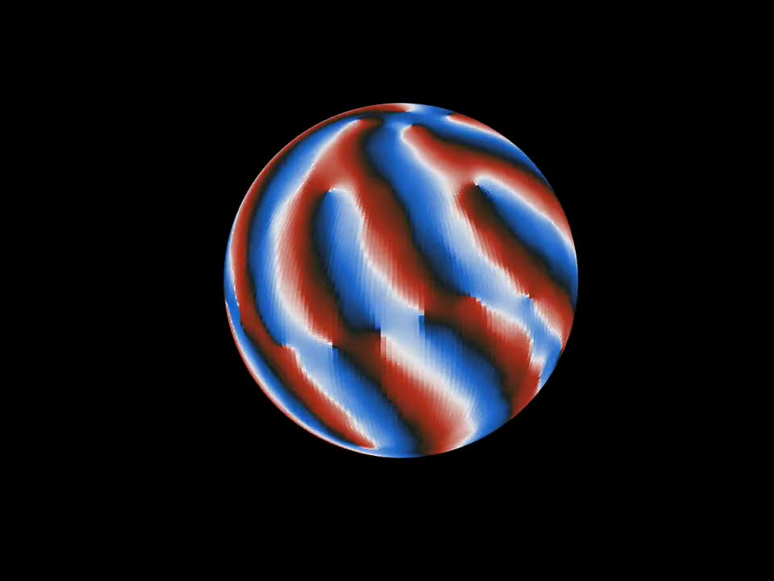
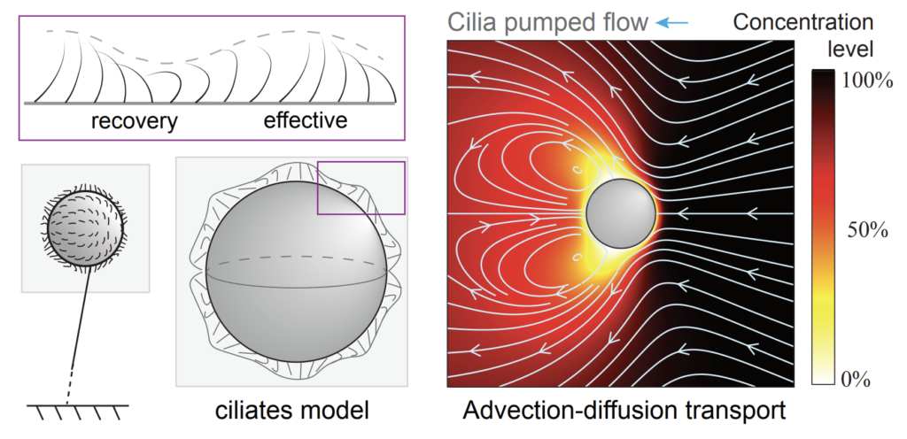
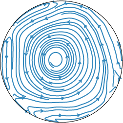
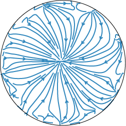
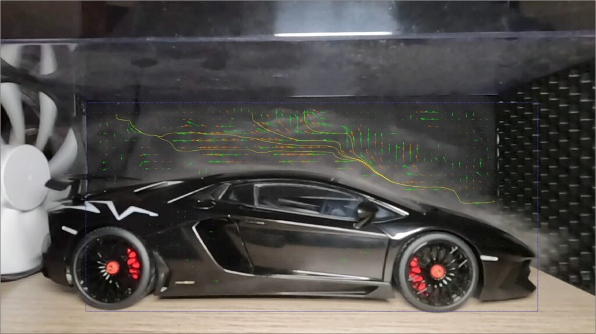

Coherent flow from surface activity in a spherical cavity
Hydrodynamically coupled rotors lining a sphere self-organize into spiraling waves that drive cell-wide flows. Current work

I am currently a Theory Fellow at Janelia Research Campus, HHMI. I am interested in physics-aware machine learning architecture design for scientific discovery. My Ph.D. focuses on fluid dynamics, with interdisciplinary in biophysics. I researched fluid dynamics and nutrient transport in microscopic living systems, involving using numerical and analytical methods to solve and analyze PDEs, solving PDE-constraint optimization (inverse) problems, and analyze synchronization emergent from Kuramoto-like oscillators.
I did my Ph.D. in Mechanical Engineering at University of Southern California, advised by Professor Eva Kanso. I hold M.S. in both Mechanical Engineering and Applied Physics in Electrical Engineering, with specialty areas in Electromagnetic Wave Propagation and Scattering, and Mechanics of Fluid and Solid Media.

Hydrodynamically coupled rotors lining a sphere self-organize into spiraling waves that drive cell-wide flows. Current work

Flow physics plays an important role in morphological evolution of unicellular ciliated eukaryotes. Read more

Adaptive feeding strategies: optimal cilia motion depends on Péclet number. Read more

Phase synchronization of oscillators on the inner surface of a sphere filled with Stokes fluid. Read more


During embryonic development, surface-bound intracellular activity generates coherent, cell-wide cytoplasmic flows. We built a minimal mathematical model in which surface activity is represented by hydrodynamically coupled rotors lining a spherical cavity. Within this model, surface activity self-organizes into coherent, spiraling wave patterns that generate robust, cell-wide flows in the enclosed cavity.
These results reveal a robust hydrodynamic mechanism by which local surface activity can generate coherent, cell-scale flows, independent of microscopic details of the underlying activity.
Adaptive Motion Strategy: Swimming ciliate chases and absorbs a food blob: 1. Always swim. 2. Swim, then stay.
Full list on Google Scholar.
Vicsek model: dynamics in 2D, periodic boundary conditions.
3-zone model: dynamics in 3D, centered obstacle.

Home made wind tunnel: plastic showcase, black T-shirt, battery, computer fan, GoPro, humidifier, car models. Car models: Porsche 911 GT3 RS, Lamborghini Aventador (scale 1:18). PIV analysis: Matlab.
Conclusion: At low speeds, the Aventador outperforms the 911 GT3 RS, making it a better choice for those navigating daily traffic congestion in downtown LA or New York City. However, further analysis is needed to assess fuel efficiency.